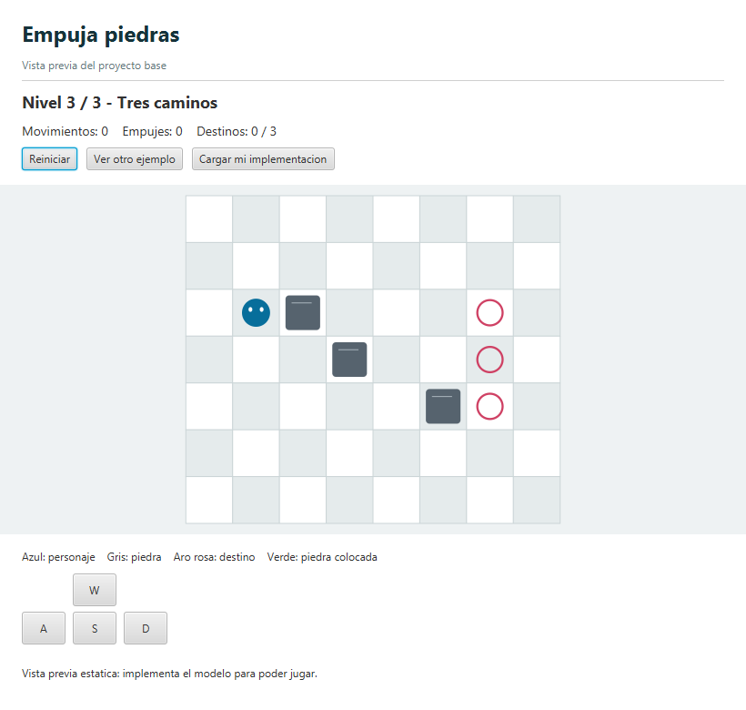

UT 04. Ejercicios
Programación Orientada a Objetos (POO)
4.1 Proyecto integrador UT1–UT4: EmpujaPiedras
Construye un juego en el que un personaje debe empujar todas las piedras hasta sus destinos. El mismo modelo funcionará desde consola y desde una interfaz JavaFX proporcionada.
Proyecto base
Descarga el proyecto Maven y abre pom.xml con IntelliJ IDEA. Configura JDK 17 y espera a que se descarguen las dependencias. Trabajaremos siempre en UTF-8.
La base incluye las vistas, los lanzadores, los contratos, tres escenarios y pruebas automáticas. Las clases que debes completar contienen avisos TODO. Compila desde el primer momento, pero el juego todavía no está implementado.
Mientras el modelo esté pendiente, aparece una vista previa estática para comprobar el tablero y recorrer sus ejemplos. No permite mover piedras. Al completar el modelo, las mismas vistas se conectarán a tu juego.

Nombre del proyecto del ejercicio: EmpujaPiedras
Objetivos y alcance
- Utilizar variables, constantes, expresiones, conversiones y porcentajes.
- Construir clases con atributos privados, constructores, métodos, parámetros y retornos.
- Comprender referencias compartidas, modificación de objetos y sustitución de referencias.
- Resolver reglas de movimiento con condicionales y recorrer información con bucles.
- Implementar listados simplemente enlazados a partir de interfaces documentadas.
- Separar modelo y presentación para reutilizar las reglas en consola y JavaFX.
- Utilizar excepciones, aserciones, Javadoc, pruebas y depuración.
No utilices arrays, matrices, colecciones de Java ni ficheros para guardar partidas. Solo la interfaz IListado<T> declara un parámetro genérico: implementaremos tres listados y tres nodos concretos. La firma estándar main(String[] args) y los mecanismos internos de JavaFX proporcionados no forman parte de esa restricción.
Reglas del juego
- El tablero tiene dimensiones positivas. Sus casillas son transitables salvo las ocupadas por piedras. Los bordes son límites, no casillas adicionales.
- El personaje se mueve una casilla con W, A, S o D, sin diagonales ni salidas del tablero.
- Si la casilla siguiente no contiene piedra, el personaje puede entrar.
- Si contiene una piedra, solo puede empujarla si la casilla inmediatamente posterior está dentro del tablero y no contiene otra piedra.
- No puede arrastrar piedras ni empujar dos a la vez. Si el intento está bloqueado, no cambia ninguna posición ni contador.
- Los destinos no son obstáculos: pueden estar bajo el personaje o una piedra y no desaparecen al retirarlos.
- Hay la misma cantidad positiva de piedras y destinos. El nivel se resuelve cuando todos los destinos están cubiertos por piedras.
- Una vez resuelto, se bloquean los movimientos. «Siguiente nivel» avanza si quedan niveles; resolver el último completa la partida.
- «Reiniciar» restaura las posiciones iniciales y pone los contadores del nivel a cero, incluso si ya estaba resuelto. No cambia de nivel.
Cada desplazamiento válido suma un movimiento. Si además desplaza una piedra, suma un empuje. Entrar en un destino vacío no cuenta como empuje.
Coordenadas y representación
La esquina superior izquierda es (0, 0). x aumenta hacia la derecha e y hacia abajo. Son válidas 0 ≤ x < anchura y 0 ≤ y < altura.
No necesitas almacenar cada casilla. Para consultar (x, y), compara esas coordenadas con el personaje y recorre los listados. Para dibujar el tablero, las vistas recorren filas y columnas con bucles anidados.
| Símbolo | Significado |
|---|---|
. | Casilla vacía. |
J | Personaje. |
P | Piedra. |
D | Destino vacío. |
* | Piedra sobre destino. |
+ | Personaje sobre destino. |
getCasilla devuelve esos símbolos. JavaFX los dibuja gráficamente y la consola los representa con texto. El modelo no elige colores ni imprime.
Organización del proyecto
El paquete base es edu.masanz.da.ut4. Mantén esta separación:
| Paquete | Responsabilidad | Trabajo |
|---|---|---|
modelo | Personaje, Piedra, Destino, Nivel y Juego. | Implementar constructores, consultas y reglas. |
listados | Tres listados concretos con un contrato común. | Implementar ListadoPiedras, ListadoDestinos y ListadoNiveles a partir de IListado<T> y los tres nodos dados. |
utilidades | Carga de niveles desde texto, código aleatorio y porcentaje decimal. | Implementar sus métodos estáticos. |
api | Contrato Partida utilizado por ambas vistas. | Respetarlo al implementar Juego. |
configuracion | Clase Constantes con los niveles dibujados en un String. | Datos proporcionados; interpretar el texto desde Utilidades. |
app, vista, demo | Lanzadores, vistas y vista previa. | Infraestructura proporcionada. |
Separación obligatoria: modelo y listados no importan JavaFX ni Scanner, no llaman a System.out y no esperan órdenes. Cada llamada procesa una acción y termina; la vista decide cuándo llega la siguiente.
Listados simplemente enlazados
El contrato común es IListado<T>: T representa el tipo de elemento. Implementa tres clases concretas: ListadoPiedras implements IListado<Piedra>, ListadoDestinos implements IListado<Destino> y ListadoNiveles implements IListado<Nivel>.
IListado<Piedra> piedras = new ListadoPiedras();
IListado<Destino> destinos = new ListadoDestinos();
IListado<Nivel> niveles = new ListadoNiveles();Solo la interfaz declara T. Cada listado utiliza su nodo específico proporcionado: NodoPiedra, NodoDestino o NodoNivel. Cada nodo guarda un objeto de su tipo y apunta al siguiente nodo del mismo tipo.
Cada listado mantiene su primer nodo y cantidad. Cada nodo guarda una referencia al objeto y otra al siguiente nodo; el último apunta a null. Un listado vacío no tiene primer nodo.
primero → nodo → nodo → nodo → null
↓ ↓ ↓
objeto objeto objeto| Método | Contrato |
|---|---|
incluir(elemento) | Añade al final la misma referencia. Rechaza null y una referencia ya incluida. |
obtener(indice) | Devuelve la referencia de esa posición. Los índices empiezan en cero. |
eliminar(indice) | Retira y devuelve el objeto, conservando el orden de los demás. |
sustituir(indice, elemento) | Reemplaza una referencia y devuelve la anterior, sin cambiar la cantidad. Rechaza null o una referencia presente en otra posición. |
getCantidad(), estaVacio() | Consultan la cantidad y si no hay elementos. |
vaciar() | Deja la lista vacía, sin modificar los objetos retirados. |
toString() | Representa los elementos en orden o devuelve [] si está vacío. |
Un índice inexistente debe provocar IndexOutOfBoundsException, no un acceso accidental a null. Los errores no deben alterar el listado. Sustituir un elemento por su misma referencia es válido.
Editar no es sustituir: cambiar las coordenadas de una piedra obtenida modifica el mismo objeto del listado. sustituir cambia qué objeto ocupa una posición. Dos objetos distintos con iguales datos no son una referencia duplicada; las colisiones de coordenadas las comprueba el nivel.
Clases del modelo
- Personaje: coordenadas actuales y coordenadas iniciales inmutables; consultas, cambio de posición, reinicio y descripción. Rechaza coordenadas negativas.
- Piedra: posición y reinicio de un bloque. No conoce a la siguiente piedra: ese enlace está en el nodo.
- Destino: coordenadas inmutables y descripción. Su ocupación se calcula consultando posiciones; no necesita guardar otro estado que pueda quedar desactualizado.
- Nivel: título, dimensiones, personaje, listados y contadores. Valida la configuración, busca elementos, consulta casillas, realiza movimientos, reinicia y comprueba la victoria.
- Juego: listado de niveles, índice actual y mensaje de resultado. Implementa Partida, traduce direcciones y coordina la progresión.
Los atributos serán privados. Ofrece operaciones que respeten las reglas, no setters para todo. Puedes añadir miembros privados, pero conserva las firmas públicas y sus contratos Javadoc.
Antes de un empuje, comprueba todo el movimiento. No muevas primero al personaje para descubrir después que la piedra estaba bloqueada.
Reiniciar debe restaurar coordenadas guardadas como valores. Tener dos referencias a la misma piedra no crea una copia de su estado anterior.
Tres niveles iniciales
Constantes.NIVELES contiene un String con los tres escenarios. La primera línea de cada bloque es su título; después aparecen las filas del tablero. Una línea --- separa niveles. En los escenarios dados, el personaje comienza en (1, 2), pero la carga debe deducirlo del símbolo, no asumirlo.
public class Constantes {
public static final String NIVELES =
"Primer empuje\n"
+ "......\n"
+ "......\n"
+ ".JP.D.\n"
+ "......\n"
+ "......\n";
}Este fragmento muestra solo el primer escenario; la clase del proyecto contiene los tres. Cambiar los dibujos debe bastar para cambiar los niveles, sin reescribir coordenadas en Java.
Implementa Utilidades.cargarNiveles(), que carga la constante, y Utilidades.cargarNiveles(String texto), que interpreta cualquier texto con ese formato y devuelve IListado<Nivel>. Utiliza indexOf, substring, charAt y bucles, sin split, arrays ni colecciones.
- Separa cada bloque y extrae el título.
- Deduce la anchura por los caracteres de una fila y la altura por el número de filas. Todas deben medir lo mismo.
- Localiza el único personaje y crea el nivel. Crea piedras y destinos según los símbolos y añádelos a sus listados.
*crea piedra y destino;+, personaje y destino. - Valida el nivel e inclúyelo en el listado. Cada carga debe construir objetos nuevos.
Admite saltos de línea LF y CRLF, con o sin salto final. Rechaza títulos o niveles vacíos, filas desiguales, símbolos desconocidos, personajes ausentes o repetidos y cantidades de piedras y destinos distintas o no positivas. No debe haber separador antes del primer nivel ni después del último.
Estos son los datos que se obtienen al interpretar el texto proporcionado. Las posiciones se expresan como (x, y).
| Nivel | Dimensiones | Piedras | Destinos |
|---|---|---|---|
| 1. Primer empuje | 6 × 5 | (2, 2) | (4, 2) |
| 2. Dos entregas | 7 × 6 | (2, 2), (4, 3) | (5, 2), (5, 3) |
| 3. Tres caminos | 8 × 7 | (2, 2), (3, 3), (5, 4) | (6, 2), (6, 3), (6, 4) |
Los niveles son resolubles e independientes. Reiniciar uno no altera los demás. El número mostrado empieza en uno; los índices del listado empiezan en cero.
Editar y añadir niveles
Abre src/main/java/edu/masanz/da/ut4/configuracion/Constantes.java y modifica el texto de NIVELES. No necesitas crear otra clase ni escribir coordenadas en el código.
- Editar: cambia el título o sustituye los símbolos de las filas para mover el personaje, las piedras y los destinos. Utiliza puntos para las casillas vacías, no espacios.
- Cambiar dimensiones: añade o elimina caracteres en todas las filas para cambiar la anchura; añade o elimina filas para cambiar la altura. El tablero debe seguir siendo rectangular.
- Añadir: al final del último tablero, añade una línea
---, el título nuevo y sus filas. Conserva\nal final de cada línea del String y deja el punto y coma únicamente al final de toda la constante. - Reordenar: cambia el orden de los bloques completos. Ese será el orden de juego; no hay que asignarles un número manualmente.
Por ejemplo, para añadir un cuarto nivel, retira el punto y coma de la última línea actual y continúa la concatenación con este bloque:
+ "---\n"
+ "Mi nuevo nivel\n"
+ "......\n"
+ ".JP.D.\n"
+ "......\n";Incluye un único personaje (J o +) y la misma cantidad positiva de piedras y destinos. Recuerda que * cuenta como piedra y destino, y + como personaje y destino. No dejes líneas vacías ni un separador después del último tablero.
Guarda los cambios y vuelve a ejecutar MainConsola o MainJavaFX para reconstruir la partida. Con el cargador implementado, la cantidad de niveles y sus dimensiones se deducen del texto. Prueba siempre que el nuevo mapa se pueda resolver: tener un formato válido no garantiza que las piedras puedan llegar a sus destinos.
Static, azar y conversiones
Utilidades.cargarNiveles()convierte los datos deConstantesen objetos.Utilidadeses una clase normal con métodos estáticos, sinfinalni constructor privado.Utilidades.generarCodigo()utiliza Random y devuelve un entero entre 1000 y 9999. Identifica visualmente la partida; no tiene que ser único.Utilidades.calcularPorcentaje(parte, total)devuelve un double entre 0 y 100. Valida que el total sea positivo y que la parte esté entre cero y el total. Evita la división entera.Juego.getPartidasCreadas()consulta un contador estático de construcciones válidas. Reiniciar o avanzar no lo incrementa.- El código se genera una vez por partida: no cambia al dibujar o reiniciar.
- Posiciones, movimientos y nivel actual son datos de instancia: dos partidas no comparten sus tableros.
La consola proporcionada convierte opciones con Integer.parseInt y captura NumberFormatException. Lee y explica ese código: distingue un texto no numérico de un número que queda fuera del menú.
Dos formas de ejecutar
Trabajaremos desde IntelliJ IDEA. El paquete edu.masanz.da.ut4.app contiene dos clases con un método main para elegir cómo ejecutar el mismo juego:
MainConsola: inicia la versión de texto. La entrada y salida aparecen en la ventana de ejecución de IntelliJ.MainJavaFX: abre una ventana gráfica con el tablero, los botones y los controles de teclado.
Abre la clase elegida y pulsa el triángulo verde junto a su método main, o haz clic derecho sobre la clase y selecciona Run. Para depurar, utiliza Debug. Ejecuta MainJavaFX, no AplicacionJavaFX directamente.
Antes de ejecutar, abre el proyecto como Maven mediante su pom.xml, selecciona JDK 17 y espera a que IntelliJ termine de cargar las dependencias. Ambas clases utilizan las dependencias Maven del proyecto; no necesitas copiar bibliotecas JavaFX manualmente.
W, A, S y D son las direcciones; R reinicia y N solicita avanzar. JavaFX ofrece botones. En consola, Q sale y el menú numérico admite 0 salir, 1 reiniciar, 2 avanzar y 3 cargar una partida nueva.
Ambas vistas llaman al contrato Partida. Una misma secuencia de acciones sobre partidas nuevas debe producir las mismas posiciones, contadores y victoria. No copies las reglas en las vistas.
Excepciones, aserciones y pruebas
Utiliza excepciones estándar de Java, sin crear clases de excepción propias: IllegalArgumentException para datos o argumentos no válidos e IndexOutOfBoundsException para índices inexistentes. Un bloqueo normal se comunica con false, no con una excepción.
Los métodos pendientes de la base lanzan UnsupportedOperationException para mostrar un aviso o activar la vista previa. Retira ese aviso al implementar cada método; no lo utilices para errores de datos.
Escribe una clase de comprobaciones propia para provocar y capturar un índice inexistente, comprobar referencias compartidas y probar construcciones rechazadas. No captures todos los errores para continuar como si no ocurriera nada.
Añade al menos dos aserciones sobre invariantes internas: por ejemplo, la relación entre empujes y movimientos o la permanencia del personaje dentro del mapa. No sustituyen validaciones ni deben modificar datos. Actívalas con -ea al depurar.
| Prueba mínima | Resultado esperado |
|---|---|
| Listado vacío; eliminación de primero, intermedio, último y único. | Cantidad, orden y referencias correctos. |
| Índice negativo o igual a la cantidad; inclusión de null. | Excepción adecuada y listado sin cambios. |
| Movimiento contra borde o empuje contra otra piedra. | No cambia ninguna posición ni contador. |
| Entrar y salir de destinos con personaje y piedras. | El destino se conserva y el símbolo es correcto. |
| Reiniciar después de empujar o resolver. | Coordenadas iniciales y contadores cero; victoria recalculada. |
| Avance prematuro y resolución del último nivel. | No se salta un nivel sin resolver ni se consulta fuera de la lista. |
| Dos partidas independientes. | Comparten el contador estático, no el estado del tablero. |
| Un destino de tres cubierto. | Porcentaje decimal, sin división entera. |
Los tests JUnit se ejecutan con .\mvnw.cmd test. Fallarán mientras haya operaciones pendientes. No debes modificarlos para aceptar resultados incorrectos; añade también tus propias comprobaciones.
Hitos recomendados
- Completa las entidades, validaciones y reinicio.
- Implementa los listados y prueba sus contratos.
- Completa utilidades, configuración y consultas del nivel.
- Implementa movimiento libre, empujes y bloqueos.
- Añade reinicio, victoria y progresión mediante Juego.
- Compara consola y JavaFX con las mismas acciones.
- Documenta con Javadoc, depura un empuje y registra tus pruebas.
Entrega y revisión
Entrega el proyecto en ZIP, sin target ni carpetas del IDE, junto con un documento breve de pruebas: estado inicial, acciones, resultado esperado y obtenido. Explica una decisión de encapsulación y un caso de referencias compartidas.
| Aspecto | Peso orientativo |
|---|---|
| Contrato común e implementación de los tres listados. | 25 % |
| Movimiento, empujes, bloqueos y destinos. | 25 % |
| Diseño del modelo, reinicio y progresión. | 20 % |
| Static, utilidades y tratamiento de errores. | 10 % |
| Pruebas, aserciones, documentación y legibilidad. | 15 % |
| Integración con las dos vistas proporcionadas. | 5 % |
La apariencia de JavaFX está proporcionada: se evalúa que tu modelo produzca los mismos resultados desde ambas vistas.